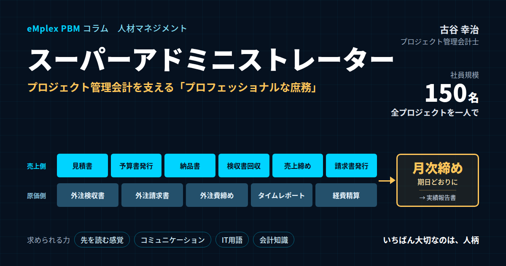

スーパーアドミニストレーター―プロジェクト管理会計を支える「プロフェッショナルな庶務」
結論：プロジェクト管理会計の成否を握るのは、仕組みと、それを回す「スーパーアドミニ」
最初に結論を申し上げます。プロジェクト管理会計を機能させるために必要なのは、優れた仕組みやシステムだけではありません。その仕組みを、毎月、期日どおりに、正確に回し続ける人の存在が欠かせません。プロジェクトの予算書の発行から、見積書や納品書の管理、検収書の回収、請求書の発行、外注費やタイムレポートや経費の締め、そしてプロジェクトの実績の報告まで。こうした業務を、締めの重要性を理解したうえで、現場と信頼関係を築きながら確実にこなし、さらに先を読んで動ける人。私はその人を、敬意を込めて「スーパーアドミニストレーター」、略してスーパーアドミニと呼んでいます。スーパーアドミニは、プロジェクト管理会計を行ううえでの、最も重要なキーパーソンの一人です。
事務処理の業務を行う社員のことを、一般にアドミニストレーター、あるいはアドミニと呼びます。日本の会社では、一般事務、営業事務、庶務といった名前で呼ばれることも多い職種です。会社の中では、ともすれば「補助的な仕事」と見られがちな職種かもしれません。しかし、私はCFOとしての経験から、この見方が大きな誤りであることを知っています。
前職で、私がCFOを務めていた頃、もの凄く仕事のできるアドミニストレーターがいました。社員が百五十名ほどの会社で、すべてのプロジェクトについて、予算書の発行から実績の報告までの事務を、プロジェクトごとに一人で管理していました。監査法人からの評判も良く、すべてのプロジェクトの証票類を、完璧にファイリングしてくれていました。彼女の業務の内容は、名前だけを見れば一般庶務です。しかし、彼女の仕事は、まさにプロフェッショナルな庶務でした。
当時、私は彼女に全幅の信頼を置いていました。何が一番安心できたかと言えば、それは、すべてにおいて、締めの重要性を分かってくれていたことです。月次決算の期日どおりに、現場の担当者たちと柔らかくコミュニケーションを取りながら、それでいてメリハリのあるプレッシャーをかけて、必要な書類を確実に回収してくれていました。彼女がいたからこそ、会社は毎月、期日どおりに月次決算を締め、案件ごとの数字を経営会議に出すことができたのです。
私はプロジェクト管理会計の専門家として、これまで200社を超えるプロジェクト型企業の経営管理を支援してきました。その中で、案件ごとの数字がしっかりと管理されている会社には、多くの場合、彼女のような存在がいることに気づきました。立派なシステムを導入しているかどうかよりも、そのシステムに正しいデータを期日どおりに集め、証票と数字を一致させ、現場を動かしている人がいるかどうか。それが、プロジェクト管理会計の成否を分けていたのです。
本稿では、アドミニストレーターという職種の役割を改めて整理したうえで、前職で出会ったスーパーアドミニの仕事の中身、彼女がなぜプロジェクト管理会計のキーパーソンだったのか、締めの重要性を理解することの意味、スーパーアドミニに求められる力、そしてスーパーアドミニを育て、活かすための組織づくりについて、私自身の経験を交えてお伝えします。
この文章は、会社の成長を支えてくれた彼女への、感謝の気持ちを込めて書いています。そして同時に、今この瞬間も、多くの会社で、プロジェクトの数字を陰で支えているアドミニストレーターの皆さんに、その仕事の価値をお伝えしたいと思っています。
本稿の内容は、プロジェクト管理会計の仕組みや手法を扱ってきたこれまでのコラムとは、少し趣が異なります。仕組みを語ることは大切ですが、その仕組みを動かしているのは、最終的には人です。どれほど精緻なルールやシステムを用意しても、それを毎月確実に回してくれる人がいなければ、数字は揃いません。本稿では、その「人」の側から、プロジェクト管理会計を見つめ直してみたいと思います。
アドミニストレーターの方々にも、ぜひ読んでいただきたいと思っています。日々の書類の処理が、会社の数字の信頼性を支え、経営の判断を支え、会社の成長を支えている。そのことを知っていただくことで、ご自身の仕事に、これまで以上の誇りと意味を感じていただけたら幸いです。
プロジェクト型のビジネスでは、案件の数が増えるほど、事務の量は増えていきます。案件が十件のときと百件のときとでは、見積書も検収書も請求書も十倍になります。会社が成長するということは、事務の量が増え続けるということでもあります。その増え続ける事務を、期日どおりに、正確に回し続けられるかどうか。それが、成長する会社の数字の信頼性を左右するのです。
アドミニストレーターとは：プロジェクト型企業における事務職の本当の役割
アドミニストレーターとは、英語のadministrator、つまり管理者や運営者という言葉から来ています。日本の会社では、事務の処理を担う社員を指して、アドミニやアドミンと呼ぶことが多くあります。外資系の企業やコンサルティングファーム、IT企業などでは、プロジェクトの事務を担う役割を、プロジェクトアドミニストレーターと呼ぶこともあります。
一般的な事務職の仕事は、書類の作成や整理、データの入力、電話や来客の対応、備品の管理など、多岐にわたります。こうした仕事は、会社の日常の運営を支える大切な仕事ですが、その価値が数字で見えにくいため、会社の中で正当に評価されにくい面もあります。
ところが、プロジェクト型のビジネスでは、アドミニストレーターの仕事は、まったく違う意味を持ちます。プロジェクト型のビジネスでは、売上も原価も、プロジェクトごとに発生します。一つのプロジェクトには、見積書、受注の書類、予算書、納品書、検収書、請求書、外注先との契約書や検収書や請求書、社員のタイムレポート、経費の精算の書類など、多くの書類が伴います。これらの書類の一つひとつが、プロジェクトの売上や原価の根拠になります。
つまり、プロジェクト型の会社のアドミニストレーターは、プロジェクト管理会計の数字の根拠となる書類を、生み出し、集め、整え、保管する役割を担っているのです。書類が期日どおりにそろわなければ、売上も原価も計上できず、月次決算は締まりません。書類と数字が一致していなければ、監査で指摘を受けます。書類が整理されていなければ、後から案件の経緯を確認することもできません。
プロジェクト型の会社では、プロジェクトマネジメントオフィス、いわゆるPMOという組織を置き、プロジェクトの管理を全社で支援することもあります。アドミニストレーターは、PMOの中で、プロジェクトの事務と数字の管理を担う役割として位置づけられることもあります。名前や組織の形は会社によって違いますが、その役割の本質は同じです。現場のプロジェクトと、経理や経営の数字とをつなぐこと。それが、プロジェクト型の会社におけるアドミニストレーターの本当の役割です。
この役割は、現場のプロジェクトマネージャーにも、経理の担当者にも、なかなか担えないものです。プロジェクトマネージャーは、顧客との調整やチームの管理に追われ、書類の管理にまで手が回りません。経理の担当者は、会計の処理には精通していても、個々のプロジェクトの現場の事情までは把握していません。その間に立ち、現場の言葉と会計の言葉の両方を理解しながら、書類と数字を整えていく。それができるのが、優れたアドミニストレーターなのです。
前職で出会った彼女の仕事は、一般庶務という名前でした。しかし、その中身は、プロジェクト型の会社の経営管理の根幹を支える仕事でした。私は、彼女の仕事を見て、庶務という仕事にも、プロフェッショナルとそうでない人との間に、大きな違いがあることを知りました。プロフェッショナルな庶務は、会社の数字の信頼性を支え、経営の判断を支え、会社の成長を支える仕事なのです。
アドミニストレーターの仕事は、会社の規模によっても姿を変えます。社員が数十名の会社では、一人のアドミニストレーターが、総務、人事、経理の補助まで、幅広く担うことが多いでしょう。社員が数百名を超える会社では、プロジェクトの事務を専門に担うアドミニストレーターが、部門ごとに置かれることもあります。いずれの場合でも、プロジェクトの数字の根拠となる書類を扱う役割を担っている限り、その仕事の重要性は変わりません。
近年では、クラウドのサービスや電子契約、電子請求書などの普及により、事務の仕事の形も大きく変わりつつあります。紙の書類をファイルに綴じる作業は減り、電子のデータを正しく管理する仕事が増えています。しかし、書類の形が紙から電子に変わっても、その書類がプロジェクトの数字の根拠であることに変わりはありません。必要な書類を期日どおりにそろえ、内容と数字が一致していることを確認し、後から確認できるように整理しておく。この仕事の本質は、紙の時代も電子の時代も同じです。
アドミニストレーターの仕事が見えにくいもう一つの理由は、うまくいっているときほど、その存在が意識されないことです。書類が期日どおりにそろい、月次決算が予定どおりに締まり、監査も問題なく終わる。すべてが順調に回っているとき、人はそれを支えている仕事に気づきません。その仕事の価値に気づくのは、多くの場合、その人がいなくなり、数字が揃わなくなったときです。だからこそ、経営陣は、順調なときにこそ、その仕事に目を向ける必要があります。
プロジェクト型の会社では、一つの書類の誤りが、思わぬところに影響します。見積書の金額と請求書の金額が一致していない。検収書の日付と売上の計上月がずれている。外注先の請求書の金額が、発注書の金額を上回っている。こうした誤りを見逃せば、売上や原価の計上を誤り、顧客や外注先との間でトラブルを生むこともあります。書類を扱う仕事には、それだけの責任が伴っているのです。
百五十名の会社の、すべてのプロジェクトを一人で：スーパーアドミニの仕事
前職のスーパーアドミニが担っていた業務を、プロジェクトの流れに沿って紹介します。その幅の広さを知っていただくと、彼女がどれほど重要な役割を果たしていたかが伝わると思います。
プロジェクトの始まりは、見積書の管理です。営業の担当者が作成した見積書を、案件ごとに整理し、どの見積書がいつ、どの顧客に提出され、どの金額で受注に至ったのかを管理していました。見積書は、後でプロジェクトの予算と実績を比べる際の出発点になります。
受注が決まると、プロジェクトの予算書を発行します。プロジェクトマネージャーが作成した予算の内容を確認し、売上、労務費、外注費、経費といった予算の項目が、会社の決めた形式で記載されているかを確かめたうえで、正式な予算書として発行していました。予算書の発行は、プロジェクトの開始を会社として正式に認める手続きであり、プロジェクトのコードが振られ、工数や費用を計上できるようになる起点でもありました。
プロジェクトが進み、成果物ができあがると、納品書を管理します。何を、いつ、顧客に納品したのかを記録します。
そして、クライアントからの検収書の回収です。納品した成果物について、顧客が内容を確認し、検収を完了したことを示す検収書を受け取ります。プロジェクト型の会社では、多くの場合、この検収書が売上を計上する根拠になります。検収書が回収できなければ、売上は計上できません。彼女は、納品の予定と検収の状況を常に把握し、検収書が期日までに届くよう、プロジェクトマネージャーや営業の担当者に働きかけていました。
検収書がそろうと、売上の締めと、請求書の発行です。検収された案件の売上を、月次の締めの期日までに確定し、顧客への請求書を発行します。請求書の金額と、検収書の金額と、売上の金額が一致していることを確認するのも、彼女の仕事でした。
原価の側でも、同じ流れがあります。外注先からの検収書の受け入れ、つまり、外注先に依頼した作業が完了したことを、社内で確認した書類を整えます。そして、外注先からの請求書を受け入れ、発注の内容や検収の内容と照合したうえで、外注費の締めを行います。発注書、検収書、請求書の三つがそろい、金額が一致していることを確認してから、外注費を計上していました。
社員の工数については、タイムレポートの締めです。社員一人ひとりが入力したタイムレポートを、月次の期日までに締め、入力の漏れがないか、勤怠の記録と大きくずれていないかを確認します。タイムレポートが締まらなければ、プロジェクトの労務費は計算できません。
経費の精算の締めも、彼女の担当でした。社員が立て替えた交通費や出張の費用などを、プロジェクトごとに正しく振り分けられているかを確認し、期日までに締めます。
そして最後に、プロジェクトの実績報告書です。予算書と比べて、売上と原価の実績がどうだったのかを、プロジェクトごとにまとめた報告書を作成し、経営陣やプロジェクトマネージャーに届けていました。
これだけの業務を、社員が百五十名ほどの会社で、すべてのプロジェクトについて、プロジェクトごとに、彼女一人で管理していたのです。もちろん、システムや表計算のファイルを使っていましたが、その仕組みを正しく回し、例外に対応し、現場を動かしていたのは、彼女でした。
この業務の一覧を眺めると、あることに気づきます。それは、彼女の仕事が、プロジェクトのライフサイクルのすべての段階にわたっているということです。見積から始まり、予算、納品、検収、請求、外注、工数、経費、そして実績の報告まで。プロジェクトの始まりから終わりまでの、数字に関わるすべての書類が、彼女の手を通っていました。だからこそ、彼女は、どのプロジェクトがどの段階にあり、どの書類がまだそろっていないのかを、誰よりもよく知っていたのです。
彼女の一日を思い出すと、その仕事の密度に改めて驚かされます。朝は、前日までに提出された書類の確認から始まり、昼にはプロジェクトマネージャーたちに、今週の納品や検収の予定を確認して回る。午後は、外注先から届いた請求書を発注書と照合し、合わない箇所があれば担当者に問い合わせる。月末が近づけば、未提出の書類の一覧を作り、一人ひとりに声をかけていく。その合間に、新しく受注した案件の予算書の確認と発行をこなしていました。これだけの仕事を、慌てる様子もなく、淡々と、しかし確実にこなしていく姿は、まさにプロフェッショナルそのものでした。
彼女が特に大切にしていたのは、プロジェクトごとにファイルを一つにまとめることでした。見積書から実績報告書まで、一つのプロジェクトに関わるすべての書類が、一つのファイルの中に、時系列で並んでいる。どのプロジェクトのファイルを開いても、同じ順番で、同じように書類が整理されている。この統一されたファイリングの形が、監査法人からの評価にも、後から案件の経緯を確認する際の速さにもつながっていました。
これらの業務は、それぞれが独立しているのではなく、互いにつながっています。見積書の内容が予算書に引き継がれ、予算書の内容が実績報告書の比較の基準になる。納品書の内容が検収書と照合され、検収書の金額が請求書と売上に反映される。外注先への発注の内容が、検収書や請求書と照合される。彼女は、これらのつながりを理解していたからこそ、一つの書類の不備が、後の書類や数字にどう影響するのかを見通すことができました。
彼女の仕事が、プロジェクト管理会計の「入口と出口」だった理由
なぜ、彼女の仕事が、プロジェクト管理会計にとってそれほど重要だったのでしょうか。それは、彼女の仕事が、プロジェクト管理会計の数字の「入口」と「出口」の両方を担っていたからです。
入口とは、数字の根拠となる書類とデータを集めることです。プロジェクト管理会計の数字は、検収書があって初めて売上になり、外注先の検収書と請求書があって初めて外注費になり、タイムレポートがあって初めて労務費になります。どれほど優れた管理の仕組みがあっても、そこに入るデータが期日どおりに、正確にそろわなければ、出てくる数字は信頼できません。彼女は、この入口を、毎月確実に守っていました。
出口とは、整えた数字を、経営陣や現場に届けることです。プロジェクトの実績報告書は、予算と実績を比べ、どのプロジェクトが計画どおりに進み、どのプロジェクトに課題があるのかを示すものです。経営陣は、この報告書をもとに、次の判断を下します。彼女は、この出口も担っていました。
入口と出口の両方を同じ人が担っていたことには、大きな意味がありました。数字を集める段階で、書類の不備や金額の食い違いに気づけば、彼女はその場でプロジェクトマネージャーに確認し、修正を求めることができました。実績報告書を作る段階で、予算と実績の差が大きい案件を見つければ、その原因となる書類をすぐにたどることができました。入口と出口がつながっていたからこそ、数字の正確さと説明のしやすさが保たれていたのです。
彼女の仕事の価値を最もよく表しているのが、監査法人からの評判の良さです。監査法人は、会社の決算の数字が正しいかどうかを確かめるために、数字の根拠となる証票類を確認します。プロジェクト型の会社では、売上の計上の根拠となる検収書や、原価の根拠となる外注先の請求書や検収書、労務費の根拠となるタイムレポートが、重要な確認の対象になります。
彼女は、すべてのプロジェクトについて、これらの証票類を完璧にファイリングしてくれていました。監査法人が、ある案件の売上の根拠を確認したいと言えば、その案件のファイルを開けば、見積書から予算書、納品書、検収書、請求書まで、すべてがそろっている。外注費の根拠を確認したいと言えば、発注書、検収書、請求書が、金額が一致した状態で並んでいる。監査法人にとって、これほど確認しやすい会社は多くなかったはずです。
証票類が整っていることは、内部統制の観点からも重要です。売上の計上が検収書という客観的な証拠に基づいていること。外注費の計上が、発注と検収と請求の三つの照合に基づいていること。これらが、仕組みとして運用され、その証拠が残っていること。上場企業の一員として、内部統制の有効性が求められる中で、彼女の仕事は、その土台そのものでした。
私がCFOとして監査法人と向き合う際、最も心強かったのは、数字の根拠を問われたときに、すぐに示せるという安心感でした。根拠を示せない数字は、どれほど正しくても、信頼されません。逆に、根拠がすぐに示せる数字は、それだけで信頼されます。彼女のファイリングは、会社の数字の信頼性そのものを支えていたのです。
そして、この信頼性は、監査のためだけのものではありませんでした。経営会議で、ある案件の採算について議論になったとき、その案件の経緯をたどる必要が生じることがあります。いつ、どのような見積で受注し、どのような予算を立て、いつ何を納品し、外注先にどれだけの費用を払ったのか。彼女のファイルがあれば、その経緯をすぐに確認できました。証票類が整っていることは、経営の判断の質を支えることでもあったのです。
監査法人とのやり取りの場面でも、彼女の存在は大きなものでした。期末の監査の時期には、監査法人の担当者から、特定の案件の証票類の提示を求められることがよくあります。彼女は、依頼された案件のファイルを、その日のうちに、必要な書類がそろった状態で準備してくれました。監査法人の担当者からは、「この会社は資料がすぐに出てくる」という言葉をいただいたこともあります。監査の作業が円滑に進むことは、監査の期間の短縮にもつながり、会社にとっても、監査法人にとっても、大きな利点でした。
彼女の仕事は、上場企業グループの一員として求められる、決算の早期化にも大きく貢献していました。月次決算を短い日数で締めるためには、月末を迎える前から、書類の回収や数字の確認を進めておく必要があります。彼女が月の前半から準備を進め、月末には多くの書類がすでにそろっている状態を作ってくれていたからこそ、経理の担当者は、月が明けてすぐに決算の作業に取りかかることができました。
証票類の整理は、会社の記憶を残すことでもあります。プロジェクトに関わった担当者が異動したり退職したりしても、ファイルが残っていれば、その案件の経緯は会社の中に残ります。数年後に同じ顧客から似た案件の相談があったとき、過去の見積や予算や実績を確認できれば、次の見積の精度を高めることができます。彼女のファイリングは、会社の経験を資産として残す仕事でもあったのです。
エンプレックスは、当時、上場企業グループの一員でした。上場企業には、決算の数字の正確さと、それを支える内部統制の有効性が厳しく求められます。私はCFOとして、その責任を負う立場にありましたが、その責任を日々の実務の中で支えてくれていたのが、彼女のファイリングと締めの仕事でした。どれほど立派な内部統制の規程を作っても、それが日々の業務で守られ、その証拠が残っていなければ、統制は機能していないのと同じです。彼女は、規程を日々の実務に変えてくれる存在でした。
最も信頼できた理由：締めの重要性を理解していたこと
私が彼女に全幅の信頼を置いていた最大の理由は、すべてにおいて、締めの重要性を分かってくれていたことです。
締めとは、ある期日までに、その期間の数字を確定させることです。月次決算の締め、売上の締め、外注費の締め、タイムレポートの締め、経費の精算の締め。プロジェクト型の会社の事務には、多くの締めがあります。そして、これらの締めは、互いにつながっています。タイムレポートが締まらなければ、プロジェクトの労務費が確定しない。外注費が締まらなければ、プロジェクトの原価が確定しない。検収書が回収できなければ、売上が確定しない。そして、これらがすべて確定しなければ、月次決算は締まらず、経営会議に数字を出すことができません。
締めの重要性を理解しているということは、自分の担当する一つの締めが遅れると、その後のすべての作業が遅れ、最終的には経営の判断が遅れることを、理解しているということです。彼女は、自分の仕事が、会社の数字の流れの中のどこに位置していて、それが遅れると何が起きるのかを、よく分かっていました。だからこそ、期日を守ることに対して、一切の妥協がありませんでした。
月次決算の期日どおりに書類を回収するために、彼女が実践していたのが、現場との柔らかいコミュニケーションと、メリハリのあるプレッシャーの組み合わせでした。
柔らかいコミュニケーションとは、現場の担当者たちとの日頃の関係づくりです。プロジェクトマネージャーや営業の担当者は、顧客への対応やプロジェクトの進行に追われ、書類の提出はどうしても後回しになりがちです。彼女は、そうした現場の事情をよく理解し、責めるのではなく、手伝う姿勢で接していました。書類の書き方が分からない担当者には丁寧に説明し、忙しい担当者には、何をいつまでに出せばよいのかを、短く分かりやすく伝えていました。現場の担当者から見れば、彼女は、自分たちの事務の負担を軽くしてくれる、頼れる存在でした。
一方で、メリハリのあるプレッシャーとは、期日については決して譲らないことです。締めの期日が近づくと、彼女は、まだ書類を提出していない担当者に、はっきりと期日を伝えて催促していました。期日の数日前には予告を、前日には確認を、当日には最後の催促を。そのリズムが毎月決まっていたので、現場の担当者たちも、彼女から連絡が来たら、期日が近いのだと分かっていました。誰に対しても同じように期日を求め、例外を作らない。その一貫性が、現場の信頼と協力を生んでいました。
柔らかさとメリハリ。この二つは、一見すると矛盾しているように思えるかもしれません。しかし、彼女の中では、この二つはしっかりと結びついていました。日頃から現場の事情を理解し、助けてくれる人だからこそ、その人が「今日までにお願いします」と言えば、現場は応えます。逆に、日頃は何も関わらないのに、期日にだけ厳しく催促する人の言葉は、なかなか届きません。信頼関係があって初めて、プレッシャーは機能するのです。
私自身、新卒で入社した朋友建設で、締めの数字が揃わないことの怖さを経験しています。工事ごとの数字が月末になってもそろわず、決算の取りまとめが遅れる。その遅れが、経営の判断の遅れにつながっていました。会社が和議という局面を迎える過程で、数字が期日どおりに揃うことが、どれほど大切なことなのかを、身をもって知りました。だからこそ、CFOとなってから、締めの重要性を理解し、期日どおりに数字を揃えてくれる彼女の存在が、どれほどありがたかったか分かりません。
締めの重要性を理解している人は、言われたことをこなすだけの人とは、まったく違う動き方をします。期日に間に合わせるために、期日の前から準備をする。遅れそうな書類があれば、早めに手を打つ。締めを守ることが、自分の仕事の成果そのものだと理解しているのです。
彼女の催促の仕方には、もう一つの工夫がありました。それは、催促の理由を伝えることです。単に「書類を出してください」と言うのではなく、「この検収書が今日届かないと、今月の売上に計上できず、プロジェクトの数字が来月にずれてしまいます」と伝える。理由が分かれば、現場の担当者も、なぜ今それが必要なのかを理解し、優先して動いてくれます。自分の仕事の意味を理解している人だからこそ、相手にもその意味を伝えることができたのです。
締めの重要性の理解は、彼女自身の仕事の進め方にも表れていました。自分が処理すべき書類は、届いたその日のうちに処理し、翌日に持ち越さない。月末に作業が集中しないよう、月の前半から準備を進めておく。自分の仕事が後工程の人の仕事を止めないよう、常に先回りしていたのです。
締めを守る文化は、一人の努力だけでは根づきません。しかし、一人の人が毎月確実に締めを守り、そのために現場と誠実に向き合い続けることで、周囲の人の意識も少しずつ変わっていきます。彼女がいた頃、現場のプロジェクトマネージャーたちの間でも、月末の書類の提出は守るべきもの、という意識が自然と広がっていました。スーパーアドミニは、締めを守る文化を、組織の中に育てていく存在でもあるのです。
現場の担当者に締めを守ってもらうためには、締めのルールそのものが分かりやすいことも大切です。彼女は、月次の締めの日程を一枚の表にまとめ、毎月の初めに全員に共有していました。いつまでに何を提出すればよいのかが一目で分かれば、現場の担当者は自分の予定に組み込むことができます。分かりやすいルールと、そのルールを守るための丁寧な働きかけ。その両方がそろって、締めは毎月守られていました。
スーパーアドミニに求められる四つの力
彼女の仕事ぶりを振り返ると、スーパーアドミニに求められる力が見えてきます。私は、それを四つの力に整理しています。先を読む感覚、コミュニケーションの能力、専門的なIT用語の理解、そして会計の知識です。
一つ目は、先を読む感覚です。スーパーアドミニは、目の前の書類を処理するだけでなく、これから何が起きるのかを予測して動きます。今月はどのプロジェクトで検収が予定されているのか。どの外注先の作業が終わりそうなのか。どの担当者が月末に出張で不在になるのか。こうした先の情報を把握しておけば、締めの期日に向けて、必要な書類を前もって準備し、遅れそうなものには早めに手を打つことができます。彼女は、プロジェクトの予算書や進捗の情報から、各プロジェクトがいつ納品や検収を迎えるのかを把握し、その前から関係者に声をかけていました。問題が起きてから対応するのではなく、問題が起きる前に手を打つ。それが、先を読む感覚です。
二つ目は、コミュニケーションの能力です。先ほど述べたように、スーパーアドミニの仕事は、現場の多くの担当者から、期日どおりに書類を集めることです。そのためには、相手の状況を理解し、相手が動きやすい形で依頼をし、必要なときにははっきりと期日を求める、柔軟で芯のあるコミュニケーションが欠かせません。現場の担当者だけでなく、経理の担当者、外注先の担当者、顧客の担当者、そして監査法人とも、適切にやり取りをする必要があります。相手によって伝え方を変えながら、伝えるべきことは確実に伝える力です。
三つ目は、専門的なIT用語の理解です。前職はIT系の会社でしたので、プロジェクトの内容は、システムの開発や導入、保守などでした。予算書や見積書、納品書には、要件定義、基本設計、結合テスト、本番移行といった、ITの専門用語が数多く登場します。これらの用語が何を意味しているのかを理解していなければ、書類の内容が正しいかどうかを判断できません。たとえば、検収書に記載された成果物が、納品書や見積書に記載された作業の範囲と一致しているかを確認するには、それぞれの作業が何を指しているのかを理解している必要があります。彼女は、プロジェクトマネージャーとの会話を通じて、こうした用語を自然に身につけていました。業種は違っても、自社の事業の専門用語を理解していることは、スーパーアドミニの大切な条件です。
四つ目は、会計の知識です。スーパーアドミニは、経理の担当者ではありませんが、自分が扱う書類が、会計の上でどのような意味を持つのかを理解している必要があります。検収書がなぜ売上の根拠になるのか。外注費を計上するのに、なぜ発注書と検収書と請求書の三つの照合が必要なのか。月をまたいで納品と検収がずれた場合、どの月の売上になるのか。こうした会計の基本を理解していれば、書類の不備や、計上の時期のずれに、自ら気づくことができます。彼女は、経理の担当者や監査法人とのやり取りを通じて、会計の知識を着実に深めていました。
この四つの力は、どれか一つだけでは十分ではありません。先を読む感覚があっても、コミュニケーションの力がなければ、現場は動きません。コミュニケーションの力があっても、ITの用語や会計の知識がなければ、書類の中身の誤りに気づけません。四つの力がそろったとき、アドミニストレーターは、こなす仕事から、先を読んで動く仕事へと変わり、スーパーアドミニになるのです。
四つの力を見てきましたが、これらはすべて、最初から備わっていたわけではありません。彼女も、最初からスーパーアドミニだったわけではないはずです。日々の業務の中で、プロジェクトマネージャーと話し、経理の担当者に教わり、監査法人とのやり取りを経験する中で、一つひとつの力を着実に身につけていったのだと思います。大切なのは、そうした学びの機会を、会社が意識して用意することです。
四つの力に加えて、私が彼女から感じていたのは、数字に対する誠実さです。数字が合わないとき、それを適当に調整して済ませるのではなく、なぜ合わないのかを最後まで確認する。小さな食い違いでも見過ごさない。その誠実さが、会社の数字の正確さを最後のところで支えていました。
これらの力を、アドミニストレーターの採用や育成の場面で意識することもできます。たとえば、ITの用語や会計の知識については、入社後の研修で計画的に学んでもらう。先を読む感覚については、先輩のアドミニストレーターと一緒に月次の締めを経験し、どの時期に何を準備すべきかを体で覚えてもらう。コミュニケーションの力については、現場との打ち合わせに同席し、依頼の仕方や催促の仕方を学んでもらう。四つの力を意識して育成の計画を立てることで、スーパーアドミニを、偶然ではなく計画的に育てることができます。
会計の知識について、もう少し補足しておきます。スーパーアドミニに求められるのは、仕訳を切る力ではなく、書類と数字の関係を理解する力です。たとえば、月末に納品したものの、顧客の検収が翌月になった場合、その売上はどの月に計上されるのか。外注先の作業が今月に完了していても、請求書が来月に届く場合、その費用はどう扱うのか。こうした判断の基本を理解していれば、経理の担当者に正しい情報を、正しいタイミングで渡すことができます。
「こなす仕事」から「先を読む仕事」へ：仕事の成果とは何か
スーパーアドミニと、そうでないアドミニストレーターとの最も大きな違いは、仕事の成果とは何かを理解しているかどうかにあると、私は考えています。
こなす仕事をするアドミニストレーターにとって、仕事の成果とは、言われた作業を終えることです。提出された書類を受け取り、システムに入力し、ファイルに綴じる。それぞれの作業は正確に行われていても、提出されていない書類については、提出されるのを待つだけです。期日までに書類がそろわなくても、それは提出しなかった担当者の責任だと考えます。
一方、スーパーアドミニにとって、仕事の成果とは、作業を終えることではありません。期日どおりに、正確な数字がそろい、月次決算が締まり、経営陣が案件ごとの数字をもとに判断を下せること。それが、仕事の成果です。だからこそ、提出されていない書類があれば、自ら担当者に働きかけて回収します。書類の内容に疑問があれば、確認して正します。期日に間に合いそうにないものがあれば、早めに手を打ちます。自分の担当する作業の範囲だけでなく、その先にある成果に責任を持っているのです。
彼女は、まさにそうしたプロ意識の高いアドミニストレーターでした。月次決算が期日どおりに締まったとき、彼女は、それを自分の仕事の成果だと受け止めていました。そして、その成果を毎月確実に出し続けることに、誇りを持っていました。
先を読む仕事には、もう一つの側面があります。それは、仕組みそのものを改善していくことです。毎月同じ書類が遅れる担当者がいれば、なぜ遅れるのかを考え、提出しやすい様式に変えたり、提出の手順を見直したりする。毎月同じような確認の作業が発生していれば、その確認を不要にする方法を考える。彼女は、日々の業務の中で気づいた改善の点を、私や経理の担当者に提案してくれていました。予算書の様式の改善や、検収書の回収の手順の見直しなど、彼女の提案から生まれた改善は少なくありません。こなす仕事を続けていては、こうした改善は生まれません。仕事の成果が何かを理解しているからこそ、成果を出しやすくするための工夫が生まれるのです。
現場の部門からの信頼が厚かったことも、彼女の大きな特徴でした。現場のプロジェクトマネージャーたちは、彼女に書類を催促されることを、面倒だとは感じていなかったように思います。むしろ、彼女に任せておけば、自分のプロジェクトの事務は確実に処理される、という安心感を持っていました。彼女が、プロジェクトの予算と実績の差に気づいて声をかければ、プロジェクトマネージャーは、自分のプロジェクトの状況を見直すきっかけにしていました。彼女は、単に書類を集める人ではなく、プロジェクトマネージャーにとっての、事務と数字の面での頼れるパートナーだったのです。
現場からの信頼は、一朝一夕には得られません。日々の小さなやり取りの中で、約束を守り、相手の立場を理解し、困ったときには助けてくれる。その積み重ねが、信頼を生みます。そして、信頼があるからこそ、締めの期日に向けた催促も、現場に素直に受け止められます。現場からの信頼は、スーパーアドミニの仕事を支える、最も大切な基盤なのです。
経営者やCFOの立場から見ると、こうしたアドミニストレーターがいることは、何にも代えがたい安心につながります。月次決算が期日どおりに締まるかどうかを心配する必要がない。監査法人からの指摘を心配する必要がない。案件ごとの数字が正しいかどうかを疑う必要がない。その安心があるからこそ、経営陣は、数字を使った判断と、会社の将来の戦略に集中することができます。スーパーアドミニは、経営陣が本来の仕事に集中するための土台を作ってくれる存在なのです。
先を読む仕事ができるアドミニストレーターは、経営陣にとっての、現場の状況を知るための貴重な情報源にもなります。彼女は、書類の流れを通じて、どのプロジェクトで検収が遅れがちか、どのプロジェクトで外注費が予算を超えそうか、どの担当者が書類の提出に苦労しているかを、誰よりも早く把握していました。私は、月に一度、彼女と短い時間の打ち合わせを持ち、気になるプロジェクトの話を聞くようにしていました。数字に表れる前の兆候を、彼女の言葉から知ることも少なくありませんでした。
ホリプロで経営企画を担当していた頃にも、制作の現場の事務を支える方々の存在の大きさを感じる場面が数多くありました。作品や公演ごとの費用の書類を、期日どおりにそろえてくれる人がいるからこそ、作品ごとの収支を把握し、次の企画の判断に生かすことができました。業界は違っても、数字の根拠を揃え、現場と経営をつなぐ人の仕事の価値は変わりません。
私が彼女の仕事ぶりから学んだのは、仕事の成果を定義することの大切さでした。成果が「作業を終えること」と定義されていれば、人は作業を終えることを目指します。成果が「期日どおりに正確な数字を揃え、経営が判断できる状態をつくること」と定義されていれば、人はそのために必要なことを自ら考えて動きます。アドミニストレーターに仕事を任せる際には、作業の手順だけでなく、その仕事の成果が何なのかを、はっきりと伝えることが大切です。
スーパーアドミニを育て、活かす組織づくり
では、スーパーアドミニは、どうすれば育つのでしょうか。私の答えは、はっきりしています。スーパーアドミニを作るには、人柄が一番です。
先ほど述べた四つの力のうち、ITの用語や会計の知識は、学ぶことで身につけることができます。先を読む感覚も、経験を積むことで育っていきます。しかし、締めの重要性を自分のこととして受け止める責任感、現場の事情を理解しようとする思いやり、期日については誰に対しても譲らない誠実さ、そして、言われたことをこなすだけでなく、その先の成果に責任を持とうとする姿勢。こうした人柄に根ざした部分は、後から教えることが難しいものです。私が彼女を見て感じたのは、まさに彼女の人柄が、仕事の質を支えていたということでした。
採用の場面では、事務の経験や資格だけでなく、こうした人柄を見極めることが大切です。過去の仕事で、自分の担当の範囲を超えて、成果のために動いた経験があるか。周囲の人と協力して物事を進めた経験があるか。期日や約束を守ることを、どれほど大切にしているか。面接での対話を通じて、その人の仕事に対する姿勢を確かめるようにします。
そのうえで、育成の機会を用意します。会計の基本を学ぶ研修や、簿記の資格の取得の支援。自社の事業の専門用語を学ぶ機会。経理の担当者やプロジェクトマネージャーとの定期的な打ち合わせへの参加。監査法人とのやり取りへの同席。こうした機会を通じて、アドミニストレーターは、自分の仕事が会社の数字の流れの中でどのような意味を持つのかを、少しずつ理解していきます。
そして、何よりも大切なのが、評価と処遇です。アドミニストレーターの仕事は、成果が見えにくいため、正当に評価されにくい面があります。月次決算が期日どおりに締まることは、当たり前のことと受け止められ、その当たり前を支えている人の努力は、見過ごされがちです。経営陣やCFOは、その当たり前がどれほどの努力と能力によって支えられているのかを理解し、言葉と処遇の両方で、その価値を認める必要があります。スーパーアドミニの仕事を、補助的な事務ではなく、専門性の高い職務として位置づけ、それにふさわしい評価の仕組みを用意することが大切です。
ここで、一つ大切な点に触れておきます。以前のコラム「月次締めの引き継ぎストレスを仕組みで消すプロジェクト収支管理」では、月次締めを特定の担当者に依存させず、不在を前提に回る仕組みを作ることの大切さをお伝えしました。スーパーアドミニの存在は、この考え方と矛盾するものではありません。むしろ、スーパーアドミニこそが、標準化されたルールと手順を作り、それを毎月確実に回し、改善していく中心的な存在です。
ただし、どれほど優れたスーパーアドミニであっても、一人にすべてを任せきりにすることには、リスクがあります。彼女が休暇を取ったとき、体調を崩したとき、あるいは別の道へ進むとき、会社の月次決算が止まってしまっては困ります。スーパーアドミニの知恵と手順を、文書として残し、他の担当者も同じ手順で作業できるようにしておく。スーパーアドミニを中心に、その仕事を支え、引き継げる人を育てておく。スーパーアドミニの力を最大限に活かしながら、その力を組織の仕組みとして残していくことが、会社にとっても、スーパーアドミニ本人にとっても、望ましい姿です。
システムの活用も、スーパーアドミニの力を活かすうえで欠かせません。書類の受け渡しや、締めの状況の確認、数字の集計といった作業をシステムで効率化すれば、スーパーアドミニは、単純な作業から解放され、先を読んで動くことや、現場とのコミュニケーション、仕組みの改善といった、人にしかできない仕事に、より多くの時間を使えるようになります。
スーパーアドミニの仕事を評価する際には、成果を見える形にする工夫も有効です。月次決算が期日どおりに締まった回数、書類の提出の遅れの件数、監査法人からの指摘の件数、彼女の提案から生まれた改善の数。こうした指標を記録しておけば、その仕事の価値を、数字で示すことができます。見えにくい仕事だからこそ、見える形にして認めることが大切です。
キャリアの道筋を示すことも、スーパーアドミニの意欲を支えます。プロジェクトの事務の専門家として、より大きな範囲を任されていく道。経理や経営企画へと進み、数字の専門家として活躍する道。後進のアドミニストレーターを育てる立場になる道。アドミニストレーターの仕事が、行き止まりの仕事ではなく、成長の道がある仕事だと示すことで、優れた人材が長く活躍してくれるようになります。
スーパーアドミニの負担にも、経営陣は目を配る必要があります。仕事ができる人には、自然と仕事が集まります。彼女のように、すべてのプロジェクトの事務を一人で担っていれば、繁忙期には大きな負担がかかります。その負担が限界を超えないよう、業務の量を定期的に確認し、必要に応じて補佐の担当者を置く、システムで作業を減らすといった手を打つことが大切です。頼りになる人に頼りきりになるのではなく、その人が長く健やかに力を発揮できる環境を整えることが、経営の責任です。
スーパーアドミニの存在を、経営陣が社内に向けて言葉で認めることにも、大きな意味があります。月次決算が予定どおりに締まったとき、監査が円滑に終わったとき、その成果を支えた人の名前を挙げて感謝を伝える。そうした姿勢が、アドミニストレーターの仕事に対する社内の見方を変え、現場の協力を得やすくすることにもつながります。
まとめ：会社の成長を支えてくれた、プロフェッショナルな庶務に感謝を込めて
本稿では、プロジェクト管理会計を支えるキーパーソンとしての、スーパーアドミニストレーターについてお伝えしてきました。
アドミニストレーターは、事務の処理を担う社員です。しかし、プロジェクト型の会社では、その仕事は、プロジェクト管理会計の数字の根拠となる書類を、生み出し、集め、整え、保管する、経営管理の根幹を支える仕事になります。前職で出会ったスーパーアドミニは、百五十名ほどの会社のすべてのプロジェクトについて、予算書の発行から、見積書や納品書の管理、検収書の回収、請求書の発行、外注費やタイムレポートや経費の締め、そしてプロジェクトの実績報告書までを、一人で管理していました。すべてのプロジェクトの証票類を完璧にファイリングし、監査法人からの評判も高いものでした。
私が彼女に全幅の信頼を置いていた理由は、締めの重要性を理解していたことです。月次決算の期日どおりに、現場との柔らかいコミュニケーションと、メリハリのあるプレッシャーをもって、各担当者から書類を回収してくれていました。先を読む感覚、コミュニケーションの能力、専門的なIT用語の理解、そして会計の知識。この四つの力を備え、こなす仕事から先を読む仕事へと進んだアドミニストレーターが、スーパーアドミニです。現場の部門からの信頼も厚く、仕事の成果とは何かを理解している、プロ意識の高い存在でした。そして、スーパーアドミニを作るのに一番大切なのは、人柄です。
私たちが提供している「eMplex PBM」は、プロジェクトごとの予算・実績・着地見込みの管理と、日々の工数の記録を、一つの基盤で行えるサービスです。予算書の情報や、売上と原価の実績、タイムレポートの締めの状況を、プロジェクトごとに一元的に管理できるため、スーパーアドミニの皆さんが、数字の集計や照合の作業に追われることなく、先を読んで動く仕事に力を注げる環境づくりに役立ちます。
eMplex PBMのタイムシートや予実管理の機能は、月次の締めの状況をプロジェクトごとに確認できるため、どの案件の書類や工数がまだ揃っていないのかを、アドミニストレーターが一目で把握することにも役立ちます。
会社の成長を支えてくれた彼女には、今も心から感謝しています。私がCFOとして、毎月の数字に安心して向き合い、会社の将来のことを考えることができたのは、彼女が毎月、確実に数字を揃えてくれていたからです。会社の数字は、多くの人の仕事の積み重ねでできています。その中でも、数字の入口と出口を守り、現場と経営をつないでくれる人の存在は、会社にとって何よりの財産です。
彼女のことを思い出すたびに、会社の数字の一つひとつの裏には、それを揃えた人の努力があることを思い起こします。経営会議で何気なく見ている案件ごとの売上や原価も、誰かが期日どおりに書類を集め、内容を確認し、数字を確定させてくれたからこそ、そこにあるのです。経営者やCFOは、その事実を忘れてはならないと、私は自分に言い聞かせています。
この文章を書きながら、改めて思うのは、プロジェクト管理会計とは、数字の仕組みであると同時に、人と人との信頼の仕組みでもあるということです。現場の担当者が、期日どおりに書類を出してくれる。アドミニストレーターが、それを確実に集めて整えてくれる。経理の担当者が、それを正確に計上してくれる。経営陣が、その数字を信頼して判断を下す。この信頼の連鎖の真ん中にいたのが、彼女でした。
もし皆さんの会社にも、彼女のようなアドミニストレーターがいるなら、ぜひその仕事の価値を、言葉にして伝えてあげてください。そして、まだそうした存在がいないなら、人柄の良い人を見つけ、その人がスーパーアドミニへと育っていけるよう、学びの機会と信頼を与えてください。プロジェクト管理会計の仕組みは、最後は人が回すものです。仕組みと人の両方を大切にする会社こそが、確かな数字に基づいて、着実に成長していけるのだと、私は信じています。